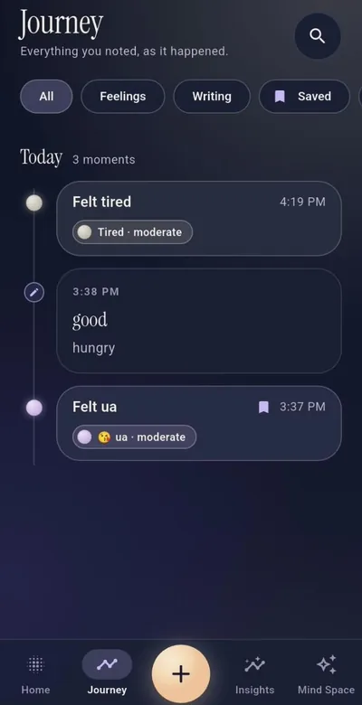
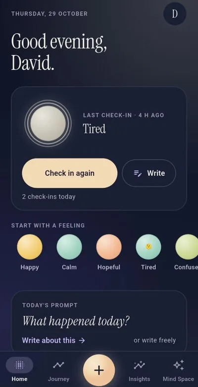
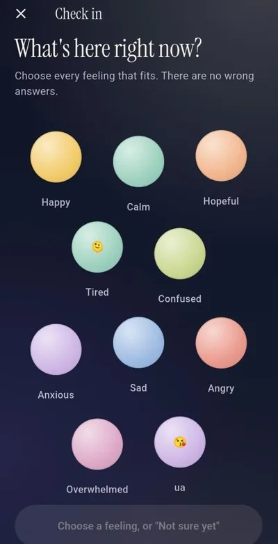
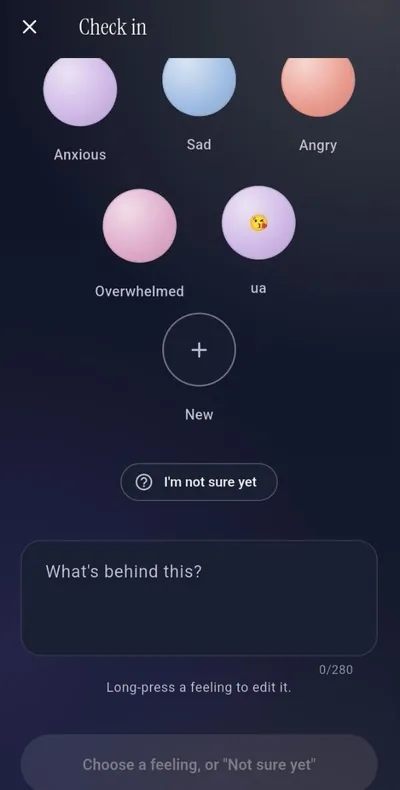
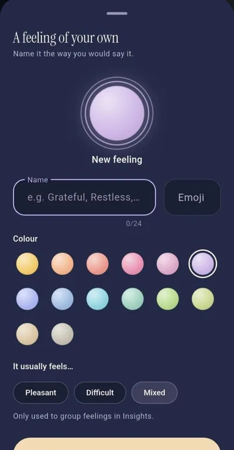
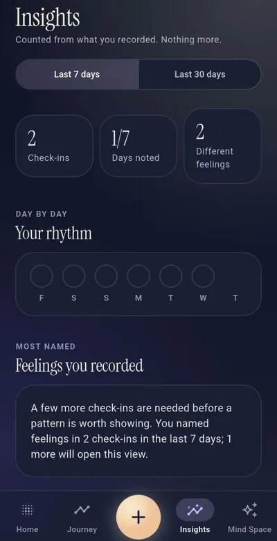
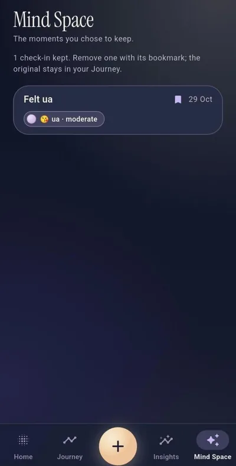
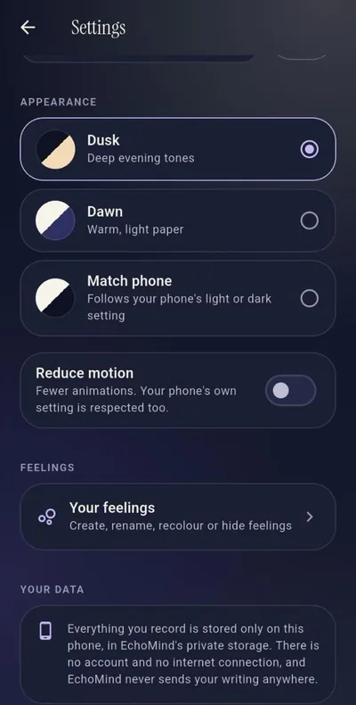

Mobile app · Android MVP
EchoMind
A private journal that helps you notice how you really feel.
EchoMind is a journaling and mood app for Android. Check in with how you feel, write freely or from a daily prompt, and look back on everything in your Journey. All of it stays on your phone. There is no account, no subscription and no internet connection.
The test build is an Android APK shared through Google Drive. It is not on Google Play yet, so Android may ask you to allow installs from this source.


- Platform
- Android
- Built with
- Flutter, Dart
- Status
- MVP, in testing
- My role
- Product design and development
The problem
Many people want to understand their moods but don't keep up with journaling. Writing takes effort, and most journaling apps want an account and keep your most personal thoughts in someone else's cloud.
EchoMind lowers both barriers. Checking in takes a few taps, a daily prompt gives you somewhere to start, and nothing you record ever leaves your phone.
Who it's for
People who want a private, easy way to reflect: students, busy professionals, and anyone who wants to see how their days really feel over time.
EchoMind is a tool for reflecting on your own feelings. It is not a medical, diagnostic or therapy service.
Features
What's in the current build, and what's planned next.
Check in with your feelingsIn MVP
Choose every feeling that fits, rate how strong it is and add a short note about what's behind it. If you can't name it yet, choose "I'm not sure yet".
Feelings of your ownIn MVP
Create a feeling with your own name, emoji and colour, and mark it as pleasant, difficult or mixed. Any feeling can be renamed, recoloured or hidden.
Writing and daily promptsIn MVP
Write freely, or start from a daily prompt such as "What happened today?".
Voice journalingIn MVP
Record up to 30 minutes with pause and resume, then listen back, add a title, note or feeling, and save or discard it. Interrupted recordings are recovered, and audio never leaves the phone.
JourneyIn MVP
Everything you noted on one timeline, as it happened, with search and filters for feelings, writing and saved moments.
InsightsIn MVP
The last 7 or 30 days at a glance: how often you checked in, how many days you noted something, your daily rhythm and the feelings you named most. Patterns only appear once there is enough to show.
Mind SpaceIn MVP
Bookmark the moments you want to keep and find them together in one place.
Dusk and Dawn themesIn MVP
Deep evening tones, warm light paper, or match your phone. A Reduce motion switch is built in, and your phone's own setting is respected too.
Private by designIn MVP
Everything is stored only on your phone, in EchoMind's private storage. There is no account and no internet connection, and your writing is never sent anywhere.
AI reflectionsPlanned
Optional AI features that help you spot patterns in your entries. You choose to turn them on, and the private core keeps working without them.
Release on Google PlayPlanned
Moving from the shared test build to a store release.
How I built it
Privacy as a rule, not a slogan
The core had to work offline, with no account, no subscription and no paid API. Every design decision was checked against that rule.
Make checking in effortless
Home opens on your last feeling, a row of feelings and today's prompt, so you can start with a single tap.
Design for calm
Soft colour bubbles, a deep evening palette and gentle motion, with plain words throughout and a switch for anyone who wants less animation.
Build and test on real hardware
Built in Flutter and tested on a physical Android phone throughout, so it works well on everyday devices.
Add AI on top, never underneath
AI features are planned as an optional layer, so the journal stays useful and private even without them.
Screens
Screenshots from the current Android build in the Dusk theme. Select one to view it full size.
- Home

Check in
Add a note
Your own feeling- Journey

Insights
Mind Space
Settings